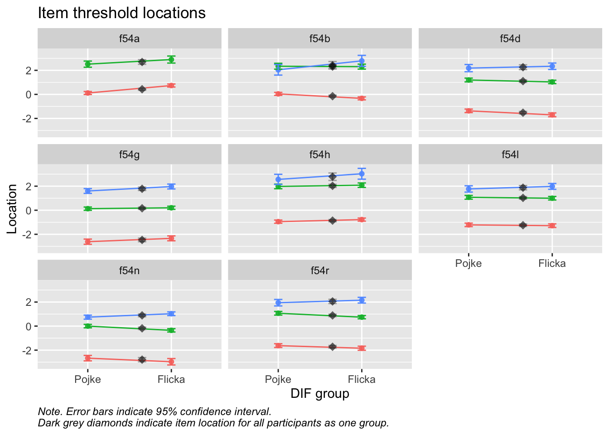

# A tibble: 5 × 1
value
<dbl>
1 0
2 3
3 2
4 1
5 NA
Code
library(rsample)set.seed(14578)# create dataframe with 2024 data with all variables (post recode) and only complete responsesdf24<-df_r2%>%filter(År==2024)%>%na.omit()%>%select(!År)# Put 1/5 of the data into the training set data_split<-initial_split(df24, prop =1/5, strata =SkolSDO)# Create data frames for the two sets:d<-training(data_split)d_test<-testing(data_split)# create separate dataframesd_pos<-d%>%select(Kön, Årskurs, SkolSDO, any_of(skola.positiva))d_test_pos<-d_test%>%select(Kön, Årskurs, SkolSDO, any_of(skola.positiva))d_neg<-d%>%select(Kön, Årskurs, SkolSDO, any_of(skola.negativa))d_test_neg<-d_test%>%select(Kön, Årskurs, SkolSDO, any_of(skola.negativa))# create DIF dfd_dif<-d%>%select(Kön,Årskurs,SkolSDO)d_testdif<-d_test%>%select(Kön,Årskurs,SkolSDO)# create separate DIF dataframesd_dif_pos<-d_pos%>%select(Kön,Årskurs,SkolSDO)d_testdif_pos<-d_test_pos%>%select(Kön,Årskurs,SkolSDO)d_dif_neg<-d_neg%>%select(Kön,Årskurs,SkolSDO)d_testdif_neg<-d_test_neg%>%select(Kön,Årskurs,SkolSDO)# remove non-itemsd<-d%>%select(!c(Kön,Årskurs,SkolSDO))d_test<-d_test%>%select(!c(Kön,Årskurs,SkolSDO))d_pos<-d_pos%>%select(!c(Kön,Årskurs,SkolSDO))d_test_pos<-d_test_pos%>%select(!c(Kön,Årskurs,SkolSDO))d_neg<-d_neg%>%select(!c(Kön,Årskurs,SkolSDO))d_test_neg<-d_test_neg%>%select(!c(Kön,Årskurs,SkolSDO))
3.1 Frågor i enkäten
Item/frågor har etiketter f54a-f54r i datafilen, och motsvaras av fråga 55 i PDF-filen med frågor.
“Hur väl stämmer följande påståenden in på din skolsituation?” följs av de ingående frågorna, alla med samma fyra svarskategorier:
‘Stämmer mycket dåligt’
‘Stämmer ganska dåligt’
‘Stämmer ganska bra’
‘Stämmer mycket bra’
Svarskategorierna ersätts med siffror från 0 till 3, och för f54a, b, c, d, g, h, j, l, n, p och r är siffrorna omvända/reverserade, d.v.s. att “Stämmer mycket bra” kodas som “0” i stället för “3” till analysen. Det innebär att höga poäng genomgående innebär hög risk. Datan sepaeras i olika mått, de som är positiva och de som är negativa
3.2 Lista på items
Code
RISEprimGreen<-"#009ca6"RISEprimRed<-"#e83c63"RISEprimYellow<-"#ffe500"RISEprimGreenMid<-"#8dc8c7"RISEprimRedMid<-"#f5a9ab"RISEprimYellowMid<-"#ffee8d"RISEprimGreenLight<-"#ebf5f0"RISEprimRedLight<-"#fde8df"RISEprimYellowLight<-"#fff7dd"RISEcompPurple<-"#482d55"RISEcompGreenDark<-"#0e4e65"RISEgrey1<-"#f0f0f0"RISEgrey2<-"#c8c8c8"RISEgrey3<-"#828282"RISEgrey4<-"#555555"# set some colors used latercutoff_line<-RISEprimReddot_color<-"black"backg_color<-RISEprimGreenLight#| label: showitems#RIcolorlistitems(c(1:4,7,8,10,12,14,16,18), RISEprimGreenMid)kolorerade<-c(1:4,7,8,10,12,14,16,18)itemlabels%>%kbl(booktabs =T, escape =F)%>%# bootstrap options are for HTML outputkable_styling(bootstrap_options =c("striped", "hover"), position ="left", full_width =F, font_size =14, fixed_thead =T)%>%# when there is a long list in the table# column_spec(c(2:3), color = "red") %>% row_spec(kolorerade, bold =F, color ="white", background =RISEprimGreen)%>%column_spec(1, bold =T)%>%kable_classic(html_font ="Lato")
itemnr
item
f54a
Jag vet vilka regler som gäller på den här skolan.
f54b
Jag trivs bra i skolan.
f54c
Vi elever är med och planerar vad vi skall göra i undervisningen.
f54d
Lärarna berömmer elever som gör något bra i skolan.
f54e
Det är hög ljudnivå och stökigt på lektionerna.
f54f
Skolarbetet känns meningslöst.
f54g
Vi elever får vara med och bestämma över saker som är viktiga för oss.
f54h
Lärarna förklarar vad vi får och vad vi inte får göra.
f54i
I början av lektionerna tar det minst fem minuter innan arbetet kan börja
f54j
Skolan berättar för mina föräldrar om jag gjort något bra.
f54k
Elevernas åsikter tas inte på allvar i den här skolan.
f54l
Vuxna ingriper om någon blir trakasserad eller mobbad.
f54m
Mina lärare ger mig inget beröm om jag jobbar hårt.
f54n
Jag ser fram emot att gå till lektionerna.
f54o
Jag är orolig för att utsättas för brott i skolan. (t.ex. stöld, misshandel etc)
f54p
De flesta av mina lärare har intressant undervisning.
f54q
Skolarbetet gör mig förvirrad.
f54r
Om man inte förstår får man direkt hjälp av läraren.
F55
Har du varit borta från skolan det här läsåret därför att du var sjuk eller mådde dåligt?
F56
Har du skolkat en hel dag från skolan det här läsåret?
F59
Har du fuskat på läxförhör eller prov i skolan det här läsåret?
Values highlighted in red are above the chosen cutoff 0.5 logits. Background color brown and blue indicate the lowest and highest values among the DIF groups.
Values highlighted in red are above the chosen cutoff 0.5 logits. Background color brown and blue indicate the lowest and highest values among the DIF groups.
Mokken-analysen indikerar en dimension och alla items som ok.
Item-restscore boostrap flaggar f54j (100), f54a(21) och f54l(7) som underfit och f54c, d, g, p och r som overfit
Itemrestscore flaggar f54a, c, d, g, j, p signifikanta på 0.01 och f54l och r på 0.05.
PCA av residualer visar 1.55 som högsta eigenvalue
Figuren med faktorladdningar på första residualkontrasten (loadloc) visar att f54j sticker ut något jämfört med övriga
Lokala beroenden (partial gamma) visar starka beroenden på f54p och n, f54g och c, f54a och b/h, f54b och n, och f54d och c/j
Targeting ser ok ut förutom minst ett item f54a som har oordnade svarskategorier och i f54b ligger de högsta trösklarna “på varandra”
Itemhierarki visar bra spridning med oordnade svarskategorier för f54a och mkt nära trösklar för f54b
Svarskategorin “Stämmer ganska dåligt” tillför inget för item f54a och b
DIF för kön flaggas för f54a (både partial gamma och tableLR) och för årskurs för f54h (partial gamma)
Slutsats: Då item underfit är mest oroväckande så tar jag bort f54j som visar både mest underfit (100) och lokalt beroende med f54d. F54a är eventuellt problematisk genom att visa både viss underfit, (svagt) lokalt beroende till f54b och h och har oordnade svarskategorier. F54a visar dessutom upp DIF för kön. Tar därav bort f54j och slår ihop svarskategorierna för f54a.
Values highlighted in red are above the chosen cutoff 0.5 logits. Background color brown and blue indicate the lowest and highest values among the DIF groups.
Values highlighted in red are above the chosen cutoff 0.5 logits. Background color brown and blue indicate the lowest and highest values among the DIF groups.
Item-restscore boostrap flaggar f54a och f54l som något underfit och f54g, p och d som något overfit, dvs f54c, r och n är inte längre overfit
Itemrestscore flaggar f54a, f54d, f54g, f54l och f54p signifikanta på 0.01.
PCA av residualer visar 1.58 som högsta eigenvalue
Figuren med faktorladdningar på första residualkontrasten (loadloc) ser ok ut
Lokala beroenden (partial gamma) visar starka beroenden på f54p och n, f54c och g. Beroenden om än inte lika starka flaggas även för f54h och a, f54d och c samt f54b och h. Residualkorrelationerna bekräftar starka korrelationer mellan f54n och p och f54g och c men även f54h och a.
Targeting ser ok ut
Itemhierarki visar nästan oordnade svarskategorier för f54b
Svarskategorin “Stämmer ganska dåligt” tillför inget för f54b
DIF för årskurs flaggas för f54h (partial gamma)
Slutsats: Flera items fortfarande problematiska. f54a och f54l visar fortfarande något underfit. f54g visar overfit och lokalt beroende med f54c, och f54p visar också overfit och starkt lokalt beroende med f54n. Börjar med att ta bort f54p.
Values highlighted in red are above the chosen cutoff 0.5 logits. Background color brown and blue indicate the lowest and highest values among the DIF groups.
Code
RIdifThreshFigLR(d_pos, d_dif_pos$Kön)
Code
RIpartgamDIF(d_pos, d_dif_pos$Årskurs)
Item
Partial gamma
SE
Lower CI
Upper CI
Adjusted p-value (BH)
f54h
0.355
0.039
0.278
0.432
0.000
f54d
0.193
0.041
0.114
0.273
0.000
f54n
-0.176
0.036
-0.247
-0.104
0.000
f54c
-0.14
0.039
-0.216
-0.065
0.002
f54a
0.126
0.044
0.041
0.211
0.035
f54g
-0.116
0.040
-0.195
-0.037
0.038
Code
RIdifTableLR(d_pos, d_dif_pos$Årskurs)
Item locations
Standard errors
Item
Åk 9
Gy 2
MaxDiff
All
SE_Åk 9
SE_Gy 2
SE_All
f54a
1.684
1.659
0.025
1.676
0.098
0.106
0.072
f54b
1.571
1.726
0.155
1.644
0.123
0.151
0.095
f54c
-0.258
0.015
0.273
-0.156
0.087
0.096
0.063
f54d
0.743
0.704
0.039
0.724
0.095
0.105
0.070
f54g
-0.179
0.094
0.273
-0.063
0.090
0.098
0.065
f54h
1.516
1.332
0.184
1.435
0.125
0.133
0.091
f54l
0.62
0.717
0.097
0.665
0.089
0.100
0.066
f54n
-0.697
-0.46
0.237
-0.585
0.094
0.092
0.065
f54r
0.422
0.655
0.233
0.518
0.090
0.104
0.067
Note:
Values highlighted in red are above the chosen cutoff 0.5 logits. Background color brown and blue indicate the lowest and highest values among the DIF groups.
Conditional infit flaggar för högt värde på f54a, f54l och f54n samt för lågt på f54d och f54g.
Item-restscore boostrap flaggar f54g och f54d som overfit
Itemrestscore flaggar f54a, d och g signifikanta på 0.01
PCA av residualer visar 1.54 som högsta eigenvalue
Figuren med faktorladdningar på första residualkontrasten (loadloc) ser ok ut
Lokala beroenden (partial gamma) visar starka beroenden på f54g och c, f54h a och svagare beroenden på f54d och c och f54b och a
Residualkorrelationer visar högst korrelation mellan f54g och c, lägre, därefter f54h och a och marginell mellan f54c och d, f54a och b och f54b och n.
Targeting ser ok ut
Itemhierarki visar nästan oordnade svarskategorier för f54b
Conditional LRT visar stataistisk signifikans för 71% av samplet
Svarskategorin “Stämmer ganska dåligt” tillför inget för f54b
DIF för årskurs flaggas för f54h (partial gamma)
Slutsats: Enligt item bootstrap flaggas mycket overfit för f54g (44) som också har lokalt beroende och residualkorrelation till f54c. Men eftersom f54g är ett mer generellt item än f54c så testar jag att ta bort f54c.
Values highlighted in red are above the chosen cutoff 0.5 logits. Background color brown and blue indicate the lowest and highest values among the DIF groups.
Code
RIdifThreshFigLR(d_pos, d_dif_pos$Kön)

Code
RIpartgamDIF(d_pos, d_dif_pos$Årskurs)
Item
Partial gamma
SE
Lower CI
Upper CI
Adjusted p-value (BH)
f54h
0.356
0.040
0.277
0.434
0.000
f54n
-0.194
0.036
-0.265
-0.123
0.000
f54d
0.161
0.040
0.081
0.240
0.001
f54g
-0.142
0.039
-0.219
-0.065
0.003
Code
RIdifTableLR(d_pos, d_dif_pos$Årskurs)
Item locations
Standard errors
Item
Åk 9
Gy 2
MaxDiff
All
SE_Åk 9
SE_Gy 2
SE_All
f54a
1.569
1.548
0.021
1.560
0.098
0.105
0.072
f54b
1.455
1.61
0.155
1.525
0.123
0.151
0.095
f54d
0.631
0.596
0.035
0.612
0.095
0.105
0.070
f54g
-0.29
-0.012
0.278
-0.174
0.091
0.098
0.065
f54h
1.401
1.219
0.182
1.318
0.125
0.133
0.091
f54l
0.509
0.61
0.101
0.552
0.089
0.100
0.066
f54n
-0.808
-0.564
0.244
-0.693
0.095
0.093
0.065
f54r
0.311
0.548
0.237
0.407
0.090
0.104
0.067
Note:
Values highlighted in red are above the chosen cutoff 0.5 logits. Background color brown and blue indicate the lowest and highest values among the DIF groups.
Conditional infit flaggar för högt värde på f54l, f54n och f54a samt för lågt på f54h
Item-restscore boostrap flaggar mycket svag overfit på f54g, f54d och f54a
Itemrestscore flaggar f54d och f54a som signifikant på 0.05
PCA av residualer visar 1.41 som högsta eigenvalue
Figuren med faktorladdningar på första residualkontrasten (loadloc)visar att f54a sticker ut
Lokala beroenden (partial gamma) visar beroende mellan f54a och f54h och svagt beroende mellan f54a och b, och något mellan f54b och h
Residualkorrelationerna visar svaga korrelationer mellan f54a och f54h, och f54d och f54g, samt f54n och f54b och f54a och b
Targeting ok
Itemhierarki visar nära tröskelvärden för f54b
Conditional LRT visar 68% statistiskt signifikanta observationer
Svarskategorin “Stämmer ganska dåligt” tillför inget för f54b
DIF kön flaggas för f54a både partial gamma och tableLR
DIF för årskurs flaggas för f54h (partial gamma)
Slutsats: Kombinationen kan duga som den är men f54a är en bubblare att ta bort pga lokala beroende och residualkorrelationer samt tydlig DIF på kön i kombination med oordnade svarskategorier. Men vi fortsätter genom att titta på reliabilitet osv för denna kombination.
Values highlighted in red are above the chosen cutoff 0.5 logits. Background color brown and blue indicate the lowest and highest values among the DIF groups.
Code
RIdifThreshFigLR(d_pos, d_dif_pos$Kön)
Code
RIpartgamDIF(d_pos, d_dif_pos$Årskurs)
Item
Partial gamma
SE
Lower CI
Upper CI
Adjusted p-value (BH)
f54h
0.349
0.040
0.270
0.427
0.000
f54d
0.185
0.041
0.105
0.265
0.000
f54n
-0.18
0.037
-0.253
-0.108
0.000
f54g
-0.131
0.040
-0.209
-0.052
0.007
Code
RIdifTableLR(d_pos, d_dif_pos$Årskurs)
Item locations
Standard errors
Item
Åk 9
Gy 2
MaxDiff
All
SE_Åk 9
SE_Gy 2
SE_All
f54b
1.578
1.741
0.163
1.651
0.126
0.153
0.097
f54d
0.732
0.692
0.04
0.710
0.096
0.106
0.071
f54g
-0.207
0.071
0.278
-0.091
0.091
0.099
0.066
f54h
1.526
1.336
0.19
1.439
0.127
0.135
0.092
f54l
0.607
0.703
0.096
0.647
0.090
0.101
0.067
f54n
-0.734
-0.493
0.241
-0.620
0.096
0.094
0.066
f54r
0.405
0.642
0.237
0.500
0.091
0.105
0.068
Note:
Values highlighted in red are above the chosen cutoff 0.5 logits. Background color brown and blue indicate the lowest and highest values among the DIF groups.
Conditional infit flaggar för högt värde på f54l, f54n samt för lågt på f54h
Item-restscore boostrap flaggar mycket svag overfit på f54g, f54d och f54r
Itemrestscore flaggar f54d och f54r som signifikant på 0.05
PCA av residualer visar 1.40 som högsta eigenvalue
Figuren med faktorladdningar på första residualkontrasten (loadloc)visar att f54n sticker ut något
Lokala beroenden (partial gamma) visar mycket svagt beroende mellan f54b och h
Residualkorrelationerna visar svaga korrelationer mellan f54d och f54g, f54d och f54h samt f54n och f54b
Targeting helt ok
Itemhierarki visar nära tröskelvärden för f54b
Conditional LRT visar 58% statistiskt signifikanta observationer
Svarskategorin “Stämmer ganska dåligt” tillför inget för f54b
DIF kön flaggas för f54a både partial gamma och tableLR
DIF för årskurs flaggas för f54h (partial gamma)
Slutsats: Jämfört med analys 4 såär värderna på item fit desamma men lokala beroenden och residualkorrelationer är inte längre ett problem efter att f54a är borta då de beroenden och korrelationer som kvarstår är mycket svaga/försumbara. Dock blir targetingen något sämre och även andelen signifikanta observationer i Conditional LRT (58 vs. 68). Däremot inget utslag på DIF kön längre utan enbart för f54h på årskurs som är försumbar. Vi fortsätter med reliabilitet osv på denna kombo.
Reliabilitet halvok och mindre bra än i analys 4, targeting ok. Men pga problemet med f54a gör vi en extra analys 5 för att se konskevenserna av att ta bort f54a. Smaksak om vi ska rekommendera med eller uran f54a.
---title: "Skolfaktorer positiva"title-block-banner: "#009ca6"title-block-banner-color: "#FFFFFF"date: last-modifiedformat: htmlexecute: echo: true warning: false message: false cache: trueeditor_options: markdown: wrap: 72 chunk_output_type: console---```{r}#| label: recodeImport#| include: false# for (i in skola.positiva) {# df[[i]]<-recode(df[[i]],"smb=0;sgb=1;sgd=2;smd=3",as.factor=FALSE)# }# # for (i in skola.negativa) {# df[[i]]<-recode(df[[i]],"smb=3;sgb=2;sgd=1;smd=0",as.factor=FALSE)# }# # for (i in c("F55","F56","F59")){# df[[i]]<-recode(df[[i]],"'Nej'=0;# 'Ja, 1 gång'=1;# 'Ja, 2-3 gånger'=2;# 'Ja, 4-10 gånger'=3;# 'Ja, 11-20 gånger'=4;# 'Ja, mer än 20 gånger'=5;# '<NA>'=NA",# as.factor=FALSE)# }### Additional item# Hur ofta har du blivit mobbad eller trakasserad i skolan det här läsåret?# df$F61<-recode(df$F61,"'Jag har inte blivit mobbad'=0;# 'Det har hänt någon enstaka gång'=1;# '2 eller 3 gånger i månaden'=2;# 'Ungefär en gång i veckan'=3;# 'Flera gånger i veckan'=4;# '<NA>'=NA;# 'Ska ej besvaras'=NA",# as.factor=FALSE)#skola.negativa <- c("f54e", "f54f", "f54i", "f54k", "f54m", "f54o", "f54q")#skola.positiva <- c("f54a", "f54b", "f54c", "f54d", "f54g", "f54h", "f54j", "f54l", "f54n", "f54p", "f54r")``````{r}#| label: setup#| include: falselibrary(mokken)library(arrow)library(ggrepel)library(car)library(grateful) library(kableExtra)library(readxl)library(tidyverse)library(eRm)library(mirt)library(iarm)library(psych)library(ggplot2)library(psychotree)library(matrixStats)library(reshape)library(knitr)library(patchwork)library(formattable) library(easyRasch) # devtools::install_github("pgmj/easyRasch")library(glue)library(foreach)#library(foreign)library(haven)library(labelled)### some commands exist in multiple packages, here we define preferred ones that are frequently usedselect <- dplyr::selectcount <- dplyr::countrecode <- car::recoderename <- dplyr::renamefilter <- dplyr::filter# import item informationitemlabels <-read_excel("itemlabels/Skola_itemlabels.xls")# where is the data? This is for Macdatafolder <-"~/Library/CloudStorage/OneDrive-SharedLibraries-RISE/SHIC - Data i Dialog - Data i Dialog/data/"# add windows path below#datafolder <- "C:/Users/fridasan/RISE/SHIC - Data i Dialog - 2024/"#sthlm <- read_spss(paste0(datafolder,"Stockholm Stad/2024/Stockholmsenkäten 2002-2024 Stockholm.sav"))#write_parquet(sthlm, paste0(datafolder,"Stockholm Stad/2024/sthlm02-24.parquet"))df.all <-read_parquet(paste0(datafolder,"Stockholm Stad/2024/sthlm02-24.parquet"))#df.all <- read_parquet(paste0(datafolder,"sthlm02-24.parquet"))# subset data for this analysisdf <- df.all %>%select(all_of(itemlabels$itemnr),Kön,ARSKURS,ar,SkolSDO)``````{r}#| label: recoderawdata#| include: false# ###### Skolfaktorer# # koda om svaren för items som ingår i individfaktorer, F66a-F66u i data, fråga 67 i PDF# # variabler df[191:211]# # hög poäng = hög risk# # definiera svarskategorierna för att förenkla recode-kodensmd <-"Stämmer mycket dåligt"sgd <-"Stämmer ganska dåligt"sgb <-"Stämmer ganska bra"smb <-"Stämmer mycket bra"### New recode code below, using variable names instead of numberingskola.negativa <-c("f54e", "f54f", "f54i", "f54k", "f54m", "f54o", "f54q")skola.positiva <-c("f54a", "f54b", "f54c", "f54d", "f54g", "f54h", "f54j", "f54l", "f54n", "f54p", "f54r")df_recoded <- df %>%mutate(across(f54a:f54r, ~as.numeric(.x))) %>%mutate(across(skola.negativa, ~ .x -1),across(skola.positiva, ~ car::recode(.x,"4=0;3=1;2=2;1=3")))df_recoded <- df_recoded %>%mutate(across(c("F55", "F56", "F59"), ~ car::recode(as.numeric(.x), "6=5;5=4;4=3;3=2;2=1;1=0")))```Recode 99 and 999 to NA and make demographic variables to factors.```{r}df_r2 <- df_recoded %>%mutate(SkolSDO =factor(SkolSDO, levels =val_labels(df_recoded$SkolSDO),labels =names(val_labels(df_recoded$SkolSDO)))) %>%mutate(Årskurs =factor(ARSKURS, levels =val_labels(df_recoded$ARSKURS),labels =names(val_labels(df_recoded$ARSKURS)))) %>%select(!ARSKURS) %>%mutate(SkolSDO = car::recode(SkolSDO,"99=NA;'Övrigt ospecificerat'=NA"), Årskurs = car::recode(Årskurs,"999=NA")) %>%mutate(Kön =factor(Kön, levels =1:2, labels =c("Pojke","Flicka")), År =as.numeric(ar)) %>%select(!ar)``````{r}df_r2 %>%select(f54a:f54r) %>%pivot_longer(everything()) %>%distinct(value)``````{r}library(rsample)set.seed(14578)# create dataframe with 2024 data with all variables (post recode) and only complete responsesdf24 <- df_r2 %>%filter(År ==2024) %>%na.omit() %>%select(!År)# Put 1/5 of the data into the training set data_split <-initial_split(df24, prop =1/5, strata = SkolSDO)# Create data frames for the two sets:d <-training(data_split)d_test <-testing(data_split)# create separate dataframesd_pos <- d %>%select(Kön, Årskurs, SkolSDO, any_of(skola.positiva))d_test_pos <- d_test %>%select(Kön, Årskurs, SkolSDO, any_of(skola.positiva))d_neg <- d %>%select(Kön, Årskurs, SkolSDO, any_of(skola.negativa))d_test_neg <- d_test %>%select (Kön, Årskurs, SkolSDO, any_of(skola.negativa))# create DIF dfd_dif <- d %>%select(Kön,Årskurs,SkolSDO)d_testdif <- d_test %>%select(Kön,Årskurs,SkolSDO)# create separate DIF dataframesd_dif_pos <- d_pos %>%select(Kön,Årskurs,SkolSDO)d_testdif_pos <- d_test_pos %>%select(Kön,Årskurs,SkolSDO)d_dif_neg <- d_neg %>%select(Kön,Årskurs,SkolSDO)d_testdif_neg <- d_test_neg %>%select(Kön,Årskurs,SkolSDO)# remove non-itemsd <- d %>%select(!c(Kön,Årskurs,SkolSDO))d_test <- d_test %>%select(!c(Kön,Årskurs,SkolSDO))d_pos <- d_pos %>%select(!c(Kön,Årskurs,SkolSDO))d_test_pos <- d_test_pos %>%select(!c(Kön,Årskurs,SkolSDO))d_neg <- d_neg %>%select(!c(Kön,Årskurs,SkolSDO))d_test_neg <- d_test_neg %>%select(!c(Kön,Årskurs,SkolSDO))```## Frågor i enkätenItem/frågor har etiketter f54a-f54r i datafilen, och motsvaras av fråga 55 i PDF-filen med frågor."Hur väl stämmer följande påståenden in på din skolsituation?" följs av de ingående frågorna, alla med samma fyra svarskategorier:* 'Stämmer mycket dåligt'* 'Stämmer ganska dåligt'* 'Stämmer ganska bra'* 'Stämmer mycket bra'Svarskategorierna ersätts med siffror från 0 till 3, och för f54a, b, c, d, g, h, j, l, n, p och r är siffrorna omvända/reverserade, d.v.s. att "Stämmer mycket bra" kodas som "0" i stället för "3" till analysen. Det innebär att höga poäng genomgående innebär hög risk. Datan sepaeras i olika mått, de som är positiva och de som är negativa## Lista på items```{r}RISEprimGreen <-"#009ca6"RISEprimRed <-"#e83c63"RISEprimYellow <-"#ffe500"RISEprimGreenMid <-"#8dc8c7"RISEprimRedMid <-"#f5a9ab"RISEprimYellowMid <-"#ffee8d"RISEprimGreenLight <-"#ebf5f0"RISEprimRedLight <-"#fde8df"RISEprimYellowLight <-"#fff7dd"RISEcompPurple <-"#482d55"RISEcompGreenDark <-"#0e4e65"RISEgrey1 <-"#f0f0f0"RISEgrey2 <-"#c8c8c8"RISEgrey3 <-"#828282"RISEgrey4 <-"#555555"# set some colors used latercutoff_line <- RISEprimReddot_color <-"black"backg_color <- RISEprimGreenLight#| label: showitems#RIcolorlistitems(c(1:4,7,8,10,12,14,16,18), RISEprimGreenMid)kolorerade <-c(1:4,7,8,10,12,14,16,18)itemlabels %>%kbl(booktabs = T, escape = F) %>%# bootstrap options are for HTML outputkable_styling(bootstrap_options =c("striped", "hover"), position ="left",full_width = F,font_size =14,fixed_thead = T) %>%# when there is a long list in the table# column_spec(c(2:3), color = "red") %>% row_spec(kolorerade, bold = F, color ="white", background = RISEprimGreen) %>%column_spec(1, bold = T) %>%kable_classic(html_font ="Lato")```## Deskriptiva data### Demografi```{r}#| label: descriptives1#| layout-ncol: 2RIdemographics(d_dif$Kön, "Kön")RIdemographics(d_dif$Årskurs, "Årskurs")RIdemographics(d_testdif$SkolSDO, "SkolSDO")```### Item-data Skola positiv::: panel-tabset#### Tile plot```{r}RItileplot(d_pos)```#### Stacked bars```{r}RIbarstack(d_pos)```:::## Analys 1 positiva items```{r}#| column: margin#| echo: falseRIlistItemsMargin(d_pos)```::: panel-tabset### Mokken dimensionality```{r}aisp(d_pos) %>%as.data.frame() %>%set_names("h > 0.3") %>%arrange(`h > 0.3`) %>%kbl_rise(tbl_width =20)```### Item-restscore```{r}d_test_pos %>%#select(!any_of(removed_items)) %>% RIbootRestscore(iterations =200, samplesize =600, cpu =8)RIrestscore(d_pos)```### PCA```{r}#| tbl-cap: "PCA of Rasch model residuals"RIpcmPCA(d_pos)```### Loadings 1st contrast```{r}#| label: fig-loadlocRIloadLoc(d_pos)```### Lokalt oberoende```{r}RIpartgamLD(d_pos)```### Targeting```{r}#| fig-height: 9RItargeting(d_pos)```### Itemhierarki```{r}#| fig-height: 9RIitemHierarchy(d_pos)```### Svarskategorier```{r}mirt(d_pos, model=1, itemtype='Rasch', verbose =FALSE) %>%plot(type="trace", as.table =TRUE, theta_lim =c(-5,5))```### DIF kön```{r}RIpartgamDIF(d_pos, d_dif_pos$Kön)RIdifTableLR(d_pos, d_dif_pos$Kön)#| fig-height: 4RIdifThreshFigLR(d_pos, d_dif_pos$Kön)```### DIF årskurs```{r}RIpartgamDIF(d_pos, d_dif_pos$Årskurs)RIdifTableLR(d_pos, d_dif_pos$Årskurs)#| fig-height: 4RIdifThreshFigLR(d_pos, d_dif_pos$Årskurs)```:::- Mokken-analysen indikerar en dimension och alla items som ok.- Item-restscore boostrap flaggar f54j (100), f54a(21) och f54l(7) som underfit och f54c, d, g, p och r som overfit- Itemrestscore flaggar f54a, c, d, g, j, p signifikanta på 0.01 och f54l och r på 0.05.- PCA av residualer visar 1.55 som högsta eigenvalue- Figuren med faktorladdningar på första residualkontrasten (loadloc) visar att f54j sticker ut något jämfört med övriga- Lokala beroenden (partial gamma) visar starka beroenden på f54p och n, f54g och c, f54a och b/h, f54b och n, och f54d och c/j- Targeting ser ok ut förutom minst ett item f54a som har oordnade svarskategorier och i f54b ligger de högsta trösklarna "på varandra"- Itemhierarki visar bra spridning med oordnade svarskategorier för f54a och mkt nära trösklar för f54b- Svarskategorin "Stämmer ganska dåligt" tillför inget för item f54a och b- DIF för kön flaggas för f54a (både partial gamma och tableLR) och för årskurs för f54h (partial gamma)Slutsats: Då item underfit är mest oroväckande så tar jag bort f54j som visar både mest underfit (100) och lokalt beroende med f54d. F54a är eventuellt problematisk genom att visa både viss underfit, (svagt) lokalt beroende till f54b och h och har oordnade svarskategorier. F54a visar dessutom upp DIF för kön. Tar därav bort f54j och slår ihop svarskategorierna för f54a.```{r}removed_items <-c("f54j")itemlabels %>%filter(itemnr %in% removed_items) %>%kbl_rise()``````{r}d_backup_pos <- d_posd_pos <- d_pos %>%select(!any_of(removed_items))``````{r}d_pos <- d_pos %>%mutate(across(any_of("f54a"), ~ car::recode(.x, "0=0; 1=1; 2=2; 3=2")))d_test_pos <- d_test_pos %>%mutate(across(any_of("f54a"), ~ car::recode(.x, "0=0; 1=1; 2=2; 3=2")))#d_pos %>% count(f54a)```## Analys 2 positiva itemsUtan items f54j```{r}#| column: margin#| echo: falseRIlistItemsMargin(d_pos)```::: panel-tabset### Item-restscore```{r}d_test_pos %>%select(!any_of(removed_items)) %>%RIbootRestscore(iterations =200, samplesize =600, cpu =8)RIrestscore(d_pos)```### PCA```{r}#| tbl-cap: "PCA of Rasch model residuals"RIpcmPCA(d_pos)```### Loadings 1st contrast```{r}#| label: fig-loadloc2RIloadLoc(d_pos)```### Lokalt oberoende```{r}#| label: tbl-ld2RIpartgamLD(d_pos)```### Residualkorrelationer```{r}#| label: tbl-rescoreskola2simcor2 <-RIgetResidCor(d_pos, iterations =500, cpu =8)RIresidcorr(d_pos, cutoff = simcor2$p99)```### Targeting```{r}#| fig-height: 9RItargeting(d_pos)```### Itemhierarki```{r}#| fig-height: 9RIitemHierarchy(d_pos)```### Svarskategorier```{r}mirt(d, model=1, itemtype='Rasch', verbose =FALSE) %>%plot(type="trace", as.table =TRUE, theta_lim =c(-5,5))```### DIF kön```{r}RIpartgamDIF(d_pos, d_dif_pos$Kön)RIdifTableLR(d_pos, d_dif_pos$Kön)#| fig-height: 4RIdifThreshFigLR(d_pos, d_dif_pos$Kön)```### DIF årskurs```{r}RIpartgamDIF(d_pos, d_dif_pos$Årskurs)RIdifTableLR(d_pos, d_dif_pos$Årskurs)#| fig-height: 4RIdifThreshFigLR(d_pos, d_dif_pos$Årskurs)```:::- Item-restscore boostrap flaggar f54a och f54l som något underfit och f54g, p och d som något overfit, dvs f54c, r och n är inte längre overfit- Itemrestscore flaggar f54a, f54d, f54g, f54l och f54p signifikanta på 0.01.- PCA av residualer visar 1.58 som högsta eigenvalue- Figuren med faktorladdningar på första residualkontrasten (loadloc) ser ok ut- Lokala beroenden (partial gamma) visar starka beroenden på f54p och n, f54c och g. Beroenden om än inte lika starka flaggas även för f54h och a, f54d och c samt f54b och h. Residualkorrelationerna bekräftar starka korrelationer mellan f54n och p och f54g och c men även f54h och a.- Targeting ser ok ut- Itemhierarki visar nästan oordnade svarskategorier för f54b- Svarskategorin "Stämmer ganska dåligt" tillför inget för f54b- DIF för årskurs flaggas för f54h (partial gamma)Slutsats: Flera items fortfarande problematiska. f54a och f54l visar fortfarande något underfit. f54g visar overfit och lokalt beroende med f54c, och f54p visar också overfit och starkt lokalt beroende med f54n. Börjar med att ta bort f54p.```{r}removed_items <-c("f54j", "f54p")itemlabels %>%filter(itemnr %in% removed_items) %>%kbl_rise()``````{r}#d_backup_pos <- d_posd_pos <- d_pos %>%select(!any_of(removed_items))```## Analys 3 positiva itemsUtan items "f54j", "f54p"```{r}#| column: margin#| echo: falseRIlistItemsMargin(d_pos)```::: panel-tabset### Conditional infit```{r}simfit3 <-RIgetfit(d_pos, iterations =200, cpu =8)RIitemfit(d_pos, simfit3)```### Item-restscore```{r}d_test_pos %>%select(!any_of(removed_items)) %>%RIbootRestscore(iterations =200, samplesize =600, cpu =8)RIrestscore(d_pos)```### PCA```{r}#| tbl-cap: "PCA of Rasch model residuals"RIpcmPCA(d_pos)```### Loadings 1st contrast```{r}#| label: fig-loadloc3RIloadLoc(d_pos)```### Lokalt oberoende```{r}#| label: tbl-ld3RIpartgamLD(d_pos)```### Residualkorrelationer```{r}#| label: tbl-rescoreskola3simcor3 <-RIgetResidCor(d_pos, iterations =500, cpu =8)RIresidcorr(d_pos, cutoff = simcor3$p99)```### Targeting```{r}#| fig-height: 9RItargeting(d_pos)```### Itemhierarki```{r}#| fig-height: 9RIitemHierarchy(d_pos)```### Conditional LRT```{r}clr_tests(d_pos, model ="PCM")RIbootLRT(d_pos, samplesize =500)```### Svarskategorier```{r}mirt(d, model=1, itemtype='Rasch', verbose =FALSE) %>%plot(type="trace", as.table =TRUE, theta_lim =c(-5,5))```### DIF kön```{r}RIpartgamDIF(d_pos, d_dif_pos$Kön)RIdifTableLR(d_pos, d_dif_pos$Kön)RIdifThreshFigLR(d_pos, d_dif_pos$Kön)```### DIF årskurs```{r}RIpartgamDIF(d_pos, d_dif_pos$Årskurs)RIdifTableLR(d_pos, d_dif_pos$Årskurs)```:::- Conditional infit flaggar för högt värde på f54a, f54l och f54n samt för lågt på f54d och f54g.- Item-restscore boostrap flaggar f54g och f54d som overfit- Itemrestscore flaggar f54a, d och g signifikanta på 0.01- PCA av residualer visar 1.54 som högsta eigenvalue- Figuren med faktorladdningar på första residualkontrasten (loadloc) ser ok ut- Lokala beroenden (partial gamma) visar starka beroenden på f54g och c, f54h a och svagare beroenden på f54d och c och f54b och a- Residualkorrelationer visar högst korrelation mellan f54g och c, lägre, därefter f54h och a och marginell mellan f54c och d, f54a och b och f54b och n. - Targeting ser ok ut- Itemhierarki visar nästan oordnade svarskategorier för f54b- Conditional LRT visar stataistisk signifikans för 71% av samplet- Svarskategorin "Stämmer ganska dåligt" tillför inget för f54b- DIF för årskurs flaggas för f54h (partial gamma)Slutsats: Enligt item bootstrap flaggas mycket overfit för f54g (44) som också har lokalt beroende och residualkorrelation till f54c. Men eftersom f54g är ett mer generellt item än f54c så testar jag att ta bort f54c.```{r}removed_items <-c("f54j", "f54p", "f54c")itemlabels %>%filter(itemnr %in% removed_items) %>%kbl_rise()``````{r}#d_backup_pos <- d_posd_pos <- d_pos %>%select(!any_of(removed_items))```## Analys 4 positiva itemsUtan items "f54j", "f54p", "f54c"```{r}#| column: margin#| echo: falseRIlistItemsMargin(d_pos)```::: panel-tabset### Conditional infit```{r}simfit4 <-RIgetfit(d_pos, iterations =200, cpu =8)RIitemfit(d_pos, simfit4)```### Item-restscore```{r}d_test_pos %>%select(!any_of(removed_items)) %>%RIbootRestscore(iterations =200, samplesize =600, cpu =8)RIrestscore(d_pos)```### PCA```{r}#| tbl-cap: "PCA of Rasch model residuals"RIpcmPCA(d_pos)```### Loadings 1st contrast```{r}#| label: fig-loadloc4RIloadLoc(d_pos)```### Lokalt oberoende```{r}#| label: tbl-ld4RIpartgamLD(d_pos)```### Residualkorrelationer```{r}#| label: tbl-rescoreskola4simcor4 <-RIgetResidCor(d_pos, iterations =500, cpu =8)RIresidcorr(d_pos, cutoff = simcor4$p99)```### Targeting```{r}#| fig-height: 9RItargeting(d_pos)```### Itemhierarki```{r}#| fig-height: 9RIitemHierarchy(d_pos)```### Conditional LRT```{r}clr_tests(d_pos, model ="PCM")RIbootLRT(d_pos, samplesize =500)```## Svarskategorier```{r}mirt(d, model=1, itemtype='Rasch', verbose =FALSE) %>%plot(type="trace", as.table =TRUE, theta_lim =c(-5,5))```### DIF kön```{r}RIpartgamDIF(d_pos, d_dif_pos$Kön)RIdifTableLR(d_pos, d_dif_pos$Kön)RIdifThreshFigLR(d_pos, d_dif_pos$Kön)```### DIF årskurs```{r}RIpartgamDIF(d_pos, d_dif_pos$Årskurs)RIdifTableLR(d_pos, d_dif_pos$Årskurs)```:::- Conditional infit flaggar för högt värde på f54l, f54n och f54a samt för lågt på f54h- Item-restscore boostrap flaggar mycket svag overfit på f54g, f54d och f54a- Itemrestscore flaggar f54d och f54a som signifikant på 0.05- PCA av residualer visar 1.41 som högsta eigenvalue- Figuren med faktorladdningar på första residualkontrasten (loadloc)visar att f54a sticker ut- Lokala beroenden (partial gamma) visar beroende mellan f54a och f54h och svagt beroende mellan f54a och b, och något mellan f54b och h- Residualkorrelationerna visar svaga korrelationer mellan f54a och f54h, och f54d och f54g, samt f54n och f54b och f54a och b- Targeting ok- Itemhierarki visar nära tröskelvärden för f54b- Conditional LRT visar 68% statistiskt signifikanta observationer- Svarskategorin "Stämmer ganska dåligt" tillför inget för f54b- DIF kön flaggas för f54a både partial gamma och tableLR- DIF för årskurs flaggas för f54h (partial gamma)Slutsats: Kombinationen kan duga som den är men f54a är en bubblare att ta bort pga lokala beroende och residualkorrelationer samt tydlig DIF på kön i kombination med oordnade svarskategorier. Men vi fortsätter genom att titta på reliabilitet osv för denna kombination.### Reliabilitet```{r}d_test_pos %>%select(!any_of(removed_items)) %>%RItif(samplePSI = T)```### Item-parametrar```{r}itemlabels %>%filter(itemnr %in%names(d_pos)) %>%write_csv("results/Skolapos_itemnr.csv")d_test_pos %>%select(!any_of(removed_items)) %>%RIitemparams()d_test_pos %>%select(!any_of(removed_items)) %>%RIitemparams(output ="file", filename ="results/Skolapos_itemparams.csv")```### Targeting```{r}d_test_pos %>%select(!any_of(removed_items)) %>%RItargeting()```### Person fit```{r}d_test_pos %>%select(!any_of(removed_items)) %>%RIpfit()``````{r}#| column: margin#| echo: falseRIlistItemsMargin(d_pos)``````{r}removed_items <-c("f54j", "f54p", "f54c")itemlabels %>%filter(itemnr %in% removed_items) %>%kbl_rise()```### Summerande kommentar - Reliabilitet ok, targeting ok. Men pga problemet med f54a gör vi en extra analys 5 för att se konskevenserna av att ta bort f54a.```{r}removed_items <-c("f54j", "f54p", "f54c", "f54a")itemlabels %>%filter(itemnr %in% removed_items) %>%kbl_rise()``````{r}#d_backup_pos <- d_posd_pos <- d_pos %>%select(!any_of(removed_items))d_test_pos <- d_test_pos %>%select(!any_of(removed_items))```## Analys 5 positiva itemsUtan items "f54j", "f54p", "f54c", f54a```{r}#| column: margin#| echo: falseRIlistItemsMargin(d_pos)```::: panel-tabset### Conditional infit```{r}simfit5 <-RIgetfit(d_pos, iterations =200, cpu =8)RIitemfit(d_pos, simfit5)```### Item-restscore```{r}d_test_pos %>%select(!any_of(removed_items)) %>%RIbootRestscore(iterations =200, samplesize =600, cpu =8)RIrestscore(d_pos)```### PCA```{r}#| tbl-cap: "PCA of Rasch model residuals"RIpcmPCA(d_pos)```### Loadings 1st contrast```{r}#| label: fig-loadloc5RIloadLoc(d_pos)```### Lokalt oberoende```{r}#| label: tbl-ld5RIpartgamLD(d_pos)```### Residualkorrelationer```{r}#| label: tbl-rescoreskola5simcor5 <-RIgetResidCor(d_pos, iterations =500, cpu =8)RIresidcorr(d_pos, cutoff = simcor5$p99)```### Targeting```{r}#| fig-height: 4RItargeting(d_pos)```### Itemhierarki```{r}#| fig-height: 5RIitemHierarchy(d_pos)```### Conditional LRT```{r}clr_tests(d_pos, model ="PCM")RIbootLRT(d_pos, samplesize =500)```## Svarskategorier```{r}mirt(d, model=1, itemtype='Rasch', verbose =FALSE) %>%plot(type="trace", as.table =TRUE, theta_lim =c(-5,5))```### DIF kön```{r}RIpartgamDIF(d_pos, d_dif_pos$Kön)RIdifTableLR(d_pos, d_dif_pos$Kön)RIdifThreshFigLR(d_pos, d_dif_pos$Kön)```### DIF årskurs```{r}RIpartgamDIF(d_pos, d_dif_pos$Årskurs)RIdifTableLR(d_pos, d_dif_pos$Årskurs)```:::- Conditional infit flaggar för högt värde på f54l, f54n samt för lågt på f54h- Item-restscore boostrap flaggar mycket svag overfit på f54g, f54d och f54r- Itemrestscore flaggar f54d och f54r som signifikant på 0.05- PCA av residualer visar 1.40 som högsta eigenvalue- Figuren med faktorladdningar på första residualkontrasten (loadloc)visar att f54n sticker ut något- Lokala beroenden (partial gamma) visar mycket svagt beroende mellan f54b och h- Residualkorrelationerna visar svaga korrelationer mellan f54d och f54g, f54d och f54h samt f54n och f54b - Targeting helt ok- Itemhierarki visar nära tröskelvärden för f54b- Conditional LRT visar 58% statistiskt signifikanta observationer- Svarskategorin "Stämmer ganska dåligt" tillför inget för f54b- DIF kön flaggas för f54a både partial gamma och tableLR- DIF för årskurs flaggas för f54h (partial gamma)Slutsats: Jämfört med analys 4 såär värderna på item fit desamma men lokala beroenden och residualkorrelationer är inte längre ett problem efter att f54a är borta då de beroenden och korrelationer som kvarstår är mycket svaga/försumbara. Dock blir targetingen något sämre och även andelen signifikanta observationer i Conditional LRT (58 vs. 68). Däremot inget utslag på DIF kön längre utan enbart för f54h på årskurs som är försumbar. Vi fortsätter med reliabilitet osv på denna kombo.### Reliabilitet```{r}#| fig-height: 5d_test_pos %>%select(!any_of(removed_items)) %>%RItif(samplePSI = T)```### Item-parametrar```{r}itemlabels %>%filter(itemnr %in%names(d_pos)) %>%write_csv("results/Skolapos_itemnr.csv")d_test_pos %>%select(!any_of(removed_items)) %>%RIitemparams()d_test_pos %>%select(!any_of(removed_items)) %>%RIitemparams(output ="file", filename ="results/Skolapos_itemparams.csv")```### Targeting```{r}#| fig-height: 5d_test_pos %>%select(!any_of(removed_items)) %>%RItargeting()```### Person fit```{r}d_test_pos %>%select(!any_of(removed_items)) %>%RIpfit()``````{r}#| column: margin#| echo: falseRIlistItemsMargin(d_pos)``````{r}removed_items <-c("f54j", "f54p", "f54c", "f54a")itemlabels %>%filter(itemnr %in% removed_items) %>%kbl_rise()```### DIF över årtal::: panel-tabset#### Data prep```{r}df_r2 %>%select(f54b, f54d, f54g, f54h, f54l, f54n, f54r, År) %>%count(År)difdata <- df_r2 %>%select(f54b, f54d, f54g, f54h, f54l, f54n, f54r, År) %>%filter(År >2012) %>%na.omit()difdata %>%count(År)dif_år <- difdata$Årdifdata$År <-NULL```#### DIF tabell```{r}RIdifTable(difdata,dif_år)```#### DIF figur```{r}RIdifFigure(difdata,dif_år) +scale_y_continuous(limits =c(-2,2))```:::### Summerande kommentar - Reliabilitet halvok och mindre bra än i analys 4, targeting ok. Men pga problemet med f54a gör vi en extra analys 5 för att se konskevenserna av att ta bort f54a. Smaksak om vi ska rekommendera med eller uran f54a.## Programvara som använts```{r}#| label: packagesvsessionInfo()```